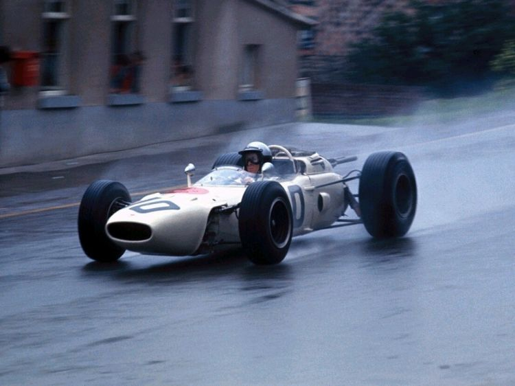

Las siglas JDM significan Japanese Domestic Market
A partir de los años 90, los fabricantes de los coches
japoneses lucharon intensamente con el propósito de producir
los mejores automóviles de gasolina del mercado de esa generación
esto produjo que las especificaciones de los JDM en japón causaran
furor en otros países e hicieran apetecible su importación.
Carros Mas Utilizados
Imagenes
Honda RA272 – Fórmula 1
Fué en esa época, paralelamente a los proyectos nacionales,
que Honda se planteó entrar en la Fórmula 1. Lo hizo en 1964
-curiosamente con un piloto estadounidense- y tras trabajar
con sus modelos de pruebas y con el relativamente primitivo
RA271 en su primer año en la categoría, los japoneses se pusieron
manos a la obra con lo que tenía que ser un coche para destacar
en el mundial de Fórmula 1. Así acabó naciendo el Honda RA272,
sin duda el monoplaza más memorable de la marca japonesa.

Honda S800 – Gran Turismo
Uno de los primeros coches que Honda puso a competir fué el
Honda S800, una pequeña máquina con un motor de 873 centímetros
cúbicos que en su versión de competición daba más de 100 caballos
de potencia con un tope de revoluciones por minuto de 10500.
Espectacular, por tratarse de un motor tan pequeño de un coche
de los años 60, sin ninguna duda. Esto hacía que el S800 fuera
ligero y aunque no fuera muy potente, tampoco era precisamente lento.
Honda Accord – Turismo
El Honda Accord de los años 90 fue famoso por su presencia en un
campeonato en concreto, por su buen desempeño en él y por el hecho
de formar parte de lo que muchos consideran la época dorada de esa
competición. Hablamos evidentemente del BTCC, donde el Honda Accord
participó a finales de los años 90 con nombres legendarios como Gabriele T
arquini o Tom Kristensen entre otros pilotos particularmente conocidos en
el Reino Unido.
Honda Civic – Turismo
Precisamente el Honda Civic ganó tres años seguidos el BTCC y también es
el coche con el que Honda participa en el WTCC. Pero mucho antes de esto,
desde su introducción en 1973, el Civic ha sido utilizado en un sinfín de
competiciones tanto a nivel japonés como europeo o norteamericano. Cualquier
cosa le valía al hambriento Civic, que llegó a competir en los 1000km de
Bathurst. Un modelo versátil que podía ponerse a punto para cualquier carrera
de turismos.
Honda NSX – Gran Turismo
Si se dicen en voz alta las palabras “Honda” y “superdeportivo”, la siguiente
en la serie es, indudablemente, “NSX”. El coche desarrollado por la marca
japonesa en conjunción con Ayrton Senna es un clásico casi atemporal y con
sus buenos momentos en la competición. Aunque la más conocida por el NSX es
la del Súper GT, donde compitieron contra los archirivales Toyota Supra y Nissan
Skyline, el Honda NSX también tuvo importancia en Europa.